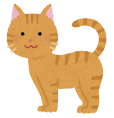
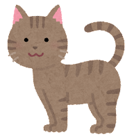
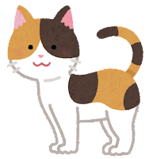

茶トラ

薄いオレンジがかった毛色に赤褐色の縞模様が入った猫。
性格は人懐っこく甘えん坊で活発。食欲旺盛
キジトラ

茶色ベースの毛に黒い縞模様が入った猫。
性格は警戒心が強いものの、一度懐くとべったり甘えん坊。だっこは嫌い。
三毛

白地に茶と黒の毛が混じった猫。
運動神経抜群で好奇心が強く、器用で賢い。ツンデレ傾向。
薄いオレンジがかった毛色に赤褐色の縞模様が入った猫。
性格は人懐っこく甘えん坊で活発。食欲旺盛
茶色ベースの毛に黒い縞模様が入った猫。
性格は警戒心が強いものの、一度懐くとべったり甘えん坊。だっこは嫌い。
白地に茶と黒の毛が混じった猫。
運動神経抜群で好奇心が強く、器用で賢い。ツンデレ傾向。